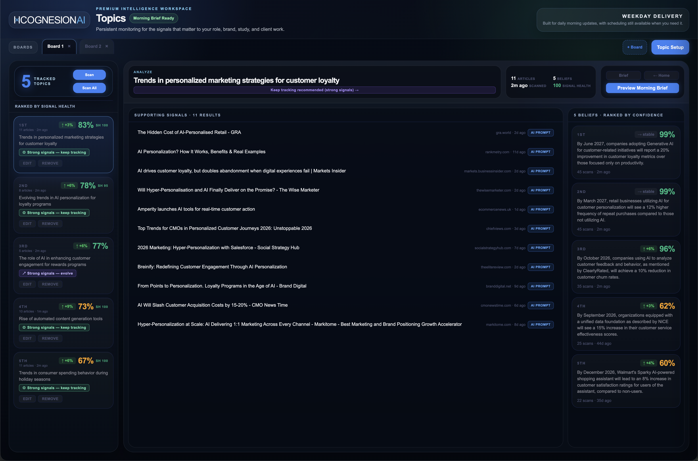
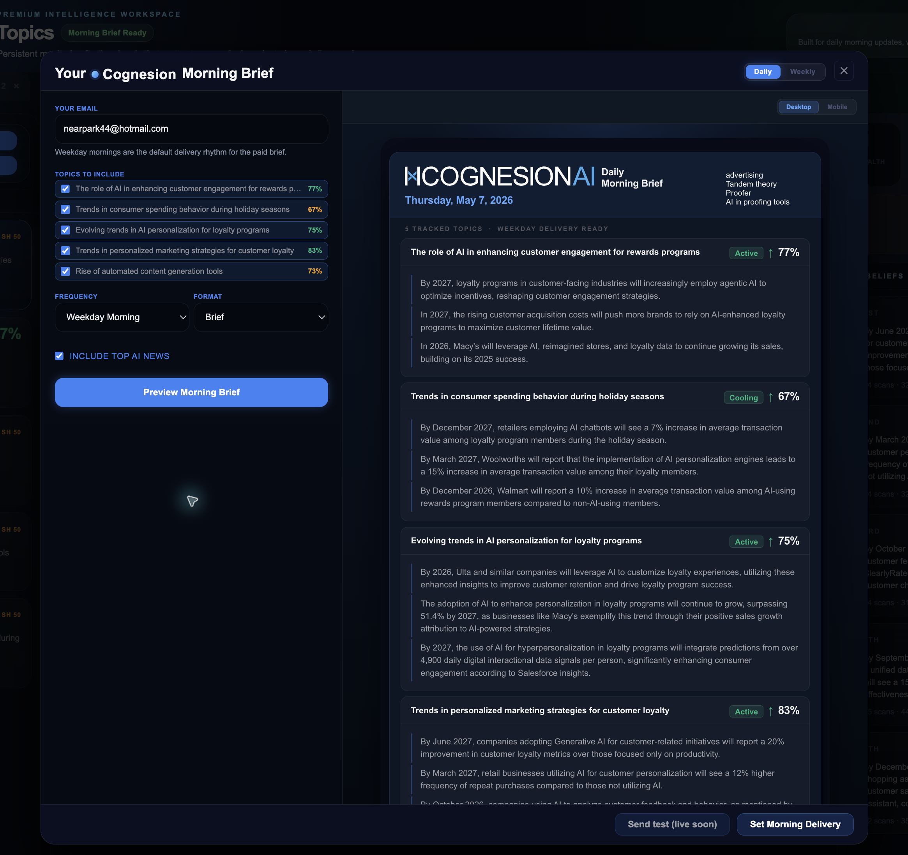

Command
Search live AI developments and rank the strongest signals fast.
Cognesion tracks the AI signals that matter to your work, filters the noise and shows what changed, why it matters and what to do next.
Search live AI developments and rank the strongest signals fast.
Track the themes tied to your clients, market, and workflow over time.
Wake up to what changed, why it matters, and what to do next.
Most tools give you more content. Cognesion gives you signal. Track the companies, themes, tools, and developments tied to your work and get a clearer view of what actually moved.
Use Command to search specific themes, rank the strongest signals, and surface what deserves attention now.
Monitor ongoing categories, companies and workflows. Watch signal shifts, topic health and what is heating up or cooling off.
Get a concise recurring brief with the strongest shifts, why they matter, and the next actions worth taking.
Command gives users one place to search AI developments, run quick scans, and move from raw movement into the next signal worth reading.
Topics turns monitoring into an ongoing workspace, with fresh articles, topic health, and belief movement across tracked boards.

The Morning Brief shows the actual topic selection, delivery controls, and rendered output so the paid value is clear before the paywall.

If AI affects your clients, market, strategy or workflow, staying current is no longer optional. Cognesion turns recurring monitoring into a usable advantage.
Stop checking ten sources and trying to connect the dots yourself.
Spot meaningful shifts early and act before competitors do.
See what matters, what changed, and what deserves attention now.
Choose the AI companies, themes, categories, and use cases tied to your work.
Cognesion evaluates new developments and identifies the shifts that matter.
Each Morning Brief shows what changed, why it matters, and what to do next.
Every paid account gets a Morning Brief designed for fast decision-making, not passive reading.
Start free with Command. Upgrade when you want tracked topics, flexible monitoring, and a Morning Brief delivered on the rhythm that fits your work.